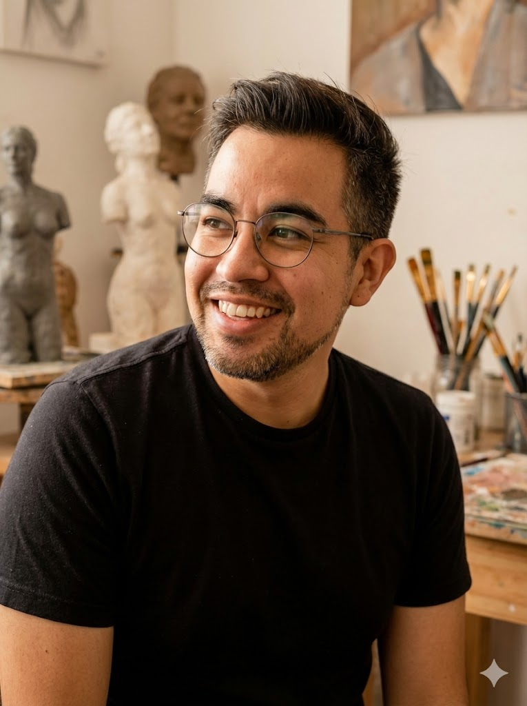

Sobre Rodolfo Hernández
Mi Trayectoria
Mi mayor pasión es dar vida a las ideas que habitan en mi cabeza, encontrando en la intersección del arte digital y la tecnología el lenguaje perfecto para expresarme. Hace más de siete años descubrí la impresión 3D, lo que encendió una chispa que me llevó a explorar a fondo el modelado, el diseño digital y el corte láser. Todo este aprendizaje me ha permitido expandir mis límites, integrando la electrónica para que mis piezas trasciendan lo puramente estético y se conviertan en verdaderas experiencias tecnológicas y artísticas. No hago producciones en serie; cada obra es un reflejo de mi imaginación, trabajada de manera artesanal, ensamblada y pintada a mano con total dedicación. Dejo un pedazo de mi corazón en cada una de ellas, garantizando que quien se lleva una de mis piezas, se lleva algo verdaderamente único.
Habilidades Técnicas
- Modelado 3D de alta definición (ZBrush, Blender, Procreate)
- Impresión 3D en Resina y Filamento
- Diseño y Corte Láser
- Post-procesado y pintura artesanal a mano y con aerógrafo
- Diseño de Iluminación LED para lamparas únicas
